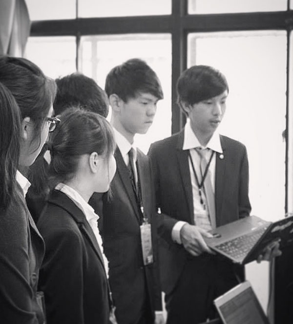

關於我
郭力銘是一位具有創新點子且對生命充滿熱情的高中生，自年幼即開始自學網頁撰寫，並於小學三年級時創立自己的科技部落格，於九歲時建立了網站。力銘於國中畢業後參與交換學生計畫至美國擴展視野，獨自在異鄉的一年使他變得更獨立也更有上進之心。在他於異國需要面對文化衝擊與語言障礙的同時，成立了 “Philip 的美國交換學年” 部落格，紀錄他在異國求學所遇到的酸甜苦辣，更開發了閱讀部落格的手機程式，為手機使用者帶來更好的閱讀體驗。他是許多會議的參加者，例如一年一度的全球集思論壇。他亦是一位活躍的模聯咖。最近，力銘於他就讀的高中成立了校內新聞網。身為一位接受台灣高中教育的學生或許需要面對許多壓力，但只要有一顆擁有想要實現夢想激情的心，沒有不可能的事。正如俗話所言: “只要心能想得到, 就一定可以做得到.” (What the mind can conceive, humankind can achieve.)
我的作品
“少即多” - 密斯凡德羅 (名建築師)。
我是一位極簡主義者。我的目標是製作出美麗又實用的網站，並且，我為我的工作與作品感到自豪。我大部分的作品都包含著極簡主義的概念。這裏是我過去幾年間的一些作品。

The Munual專為模擬聯合國參加者設計的網站, |
瀏覽此專案 |

PKGamma 數位機構PKGamma 數位機構透過創新設計, |
拜訪網站 |

The Hoverboard Guys總部位於南加州的獨立公司, |
瀏覽此專案 |

由其他角度認識我
我曾經被其他的媒體網站或部落格採訪。歡迎閱讀下方幾個不同的網站報導，由不同的角度認識我！


"成為你希望看到的改變"
- 聖雄甘地